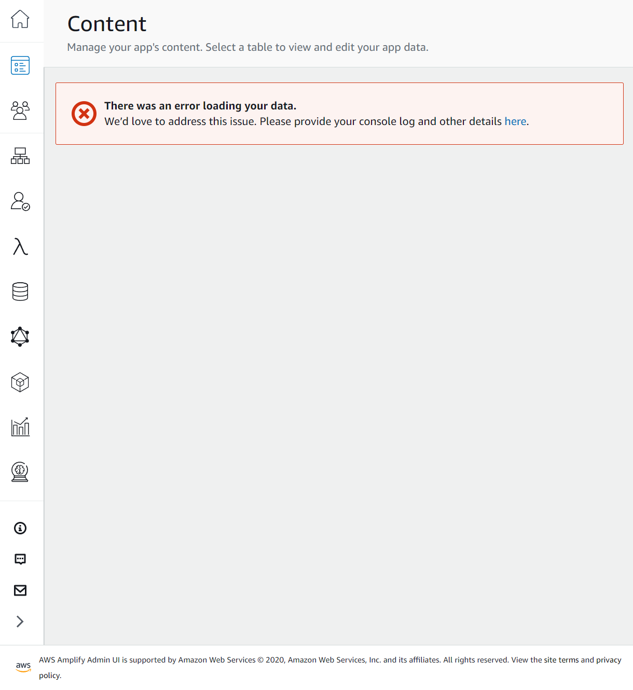
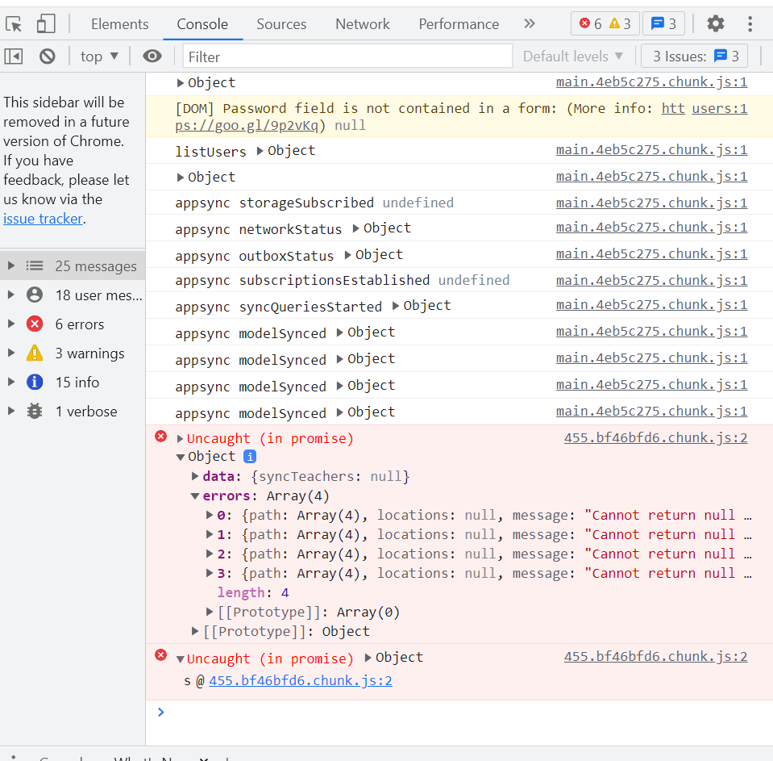

AWS Amplify 踩坑记录🕳
我也不知道这算不算 DevOps
试图从 staging clone 出一个配置一样的 dev 环境
被坑过程
Amplify backend 已有 staging，想直接再 Amplify Console clone 失败了， 出来一份空的 :/
在本地有 staging backend 配置表的分支 development 上拉取 dev environment:
amplify pull --appId <appId> --envName dev
之后进行 push，提示 HostedUIProvidersCustomResourceInputs update 失败。
Embedded stack arn:aws:cloudformation:<myapp> was not successfully updated. Currently in UPDATE_ROLLBACK_IN_PROGRESS with reason: The following resource(s) failed to update: [HostedUIProvidersCustomResourceInputs].
谷歌到 这个 issue，提示可能是 tream-provider-info.json 里缺 auth 内容。看了一下果然是空的。
在 JSON 里添加 auth 相关字段。
{
...
"categories": {
"auth": {
"<appName>": {
"userPoolId": "...",
"userPoolName": "...",
"webClientId": "...",
"nativeClientId": "..."
}
}
}
}
再次 amplify push， 提示 [webClientId, nativeClientId, userPooId] does not exist in the template。
UPDATE_FAILED auth<appName> AWS::CloudFormation::Stack <TIME> Parameters: [webClientId, nativeClientId, userPoolId] do not exist in the template
重新阅读上面提到的 issue，在对话里翻出 这么一条：原因是切换环境之后 $HOME directory 下 .aws 的 global settings 中 Amplify 的 deployment-secrets.json 没有正确 fetch 到。这又是 @aws-amplify/cli 更新到新版本之后的改动……
哎。无语了。
在 $HOME/.aws/amplify/deployment-secrets.json 中把对应社交平台的 [ProvidersCustomResourceInputs] 的 clientID 和 clientSecrets 填好（哪怕是 dummy ID & secrets 也行得通，只要不是空的），就能正常 deploy 了。
总结：
- 真的不要随便升级 amplify cli
- 创建 resource 一定要在本地，改动则不要在本地，要在 web console……
Debug Amplify admin UI
If you ever encounter any error in your Amplify Admin UI, it's useful to open the debug view in your browser and checkout the console.

In Chrome just press F12. There will be some usefull messages concerning what is wrong when Amplify tried to send request to the components in your app.

Here I have some Uncaught error in one of the items in my DynamoDB...
Amplify 7.6.x graphql api migration
Update from 7.5.x to 7.6.x will break the models created before since they Amplify team introduced new directives.
Run the follwing command to migrate API.
$ amplify migrate api
Previously you would have to create a “join table” manually between two models and create hasMany relationships from both models into that join table as a work around for this feature. With the new transformer, you can specify a @manyToMany relationship between the models and Amplify CLI will create the join tables behind the scenes.
However, currently (01/01/2022) AWS Amplify DOES NOT successfully support migration of existing joint table.
If you have a schema.graphql like this:
type Student @model @auth(rules: [{allow: private}]) {
id: ID!
email: AWSEmail
email_verified: Boolean
name: String
profile: ID
role: String
ClassJoined: [StudentClass] @hasMany(indexName: "byStudent", fields: ["id"])
ArtWorks: [ArtWork] @hasMany(indexName: "byStudent", fields: ["id"])
Comments: [Comment] @hasMany(indexName: "byStudent", fields: ["id"])
}
type Class @model @auth(rules: [{allow: private}]) {
id: ID!
name: String!
description: String!
...
startDate: AWSDateTime
students: [StudentClass] @hasMany(indexName: "byClass", fields: ["id"])
teacherID: ID @index(name: "byTeacher")
}
type StudentClass @model(queries: null) @auth(rules: [{allow: private}]) {
id: ID!
studentID: ID! @index(name: "byStudent", sortKeyFields: ["classID"])
classID: ID! @index(name: "byClass", sortKeyFields: ["studentID"])
student: Student! @belongsTo(fields: ["studentID"])
class: Class! @belongsTo(fields: ["classID"])
}
Unfortunately we have two @index, and Amplify fails to find the second (here byClass).